1.建立一個新的倉儲，名為學號.github.io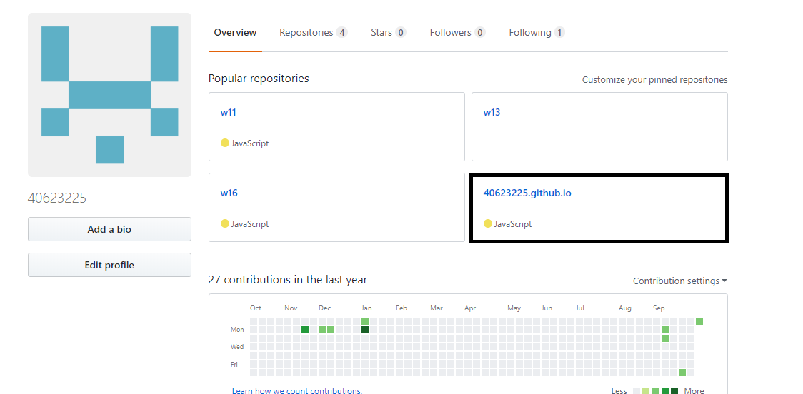
2.從https://github.com/mdecourse 中clone 2018fall
git clone https://github.com/mdecourse/2018fall 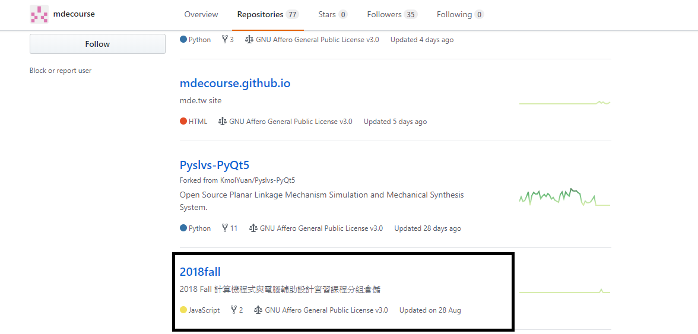
3.將40623225.github.io clone下來
git clone https://github.com/40623225/40623225.github.io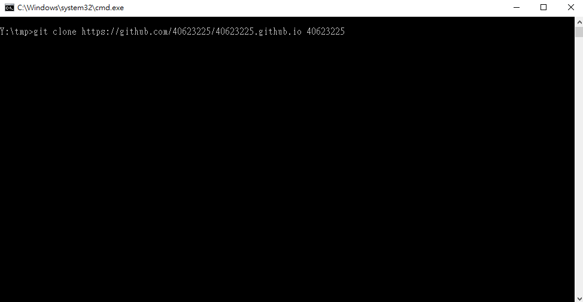
4.將2018fall資料夾複製裡面的檔案，除了.git和README.me，然後貼到自己的資料夾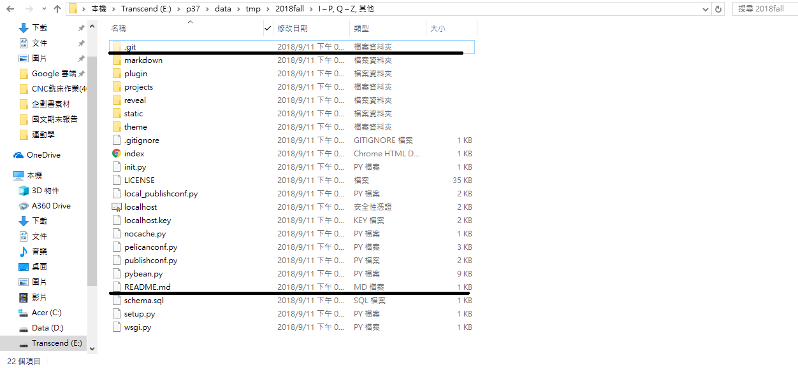
5.先用git status查看狀態>git add .增加>git commit -m "名稱" 提交>git push 推送
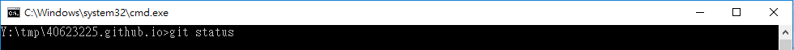
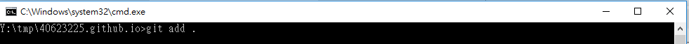
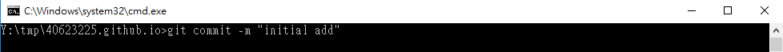
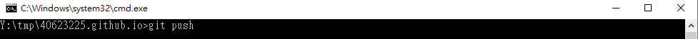
6.設定自己提交的email和名字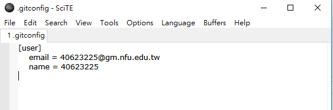
7.開啟python wsgi.py ，進入近端(localhost:8443)，更改標題名稱40623225
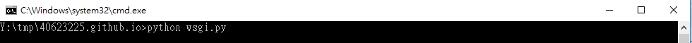
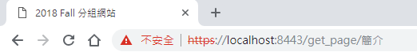
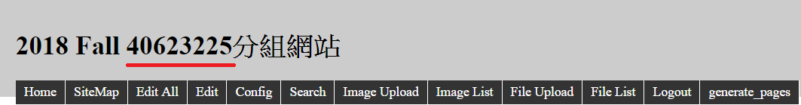
8.重複git status > git add . > git commit -m "title name" >git push ，完成圖如下
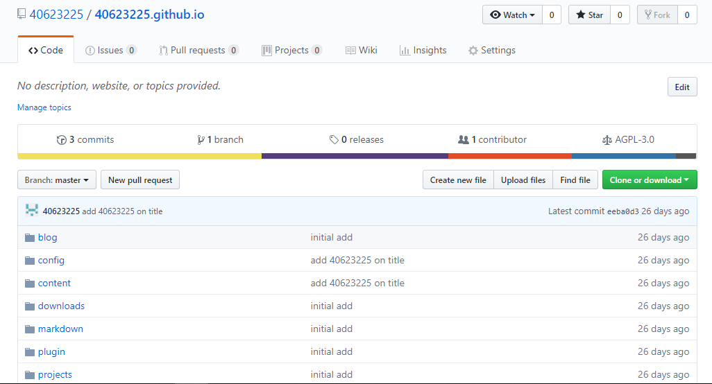
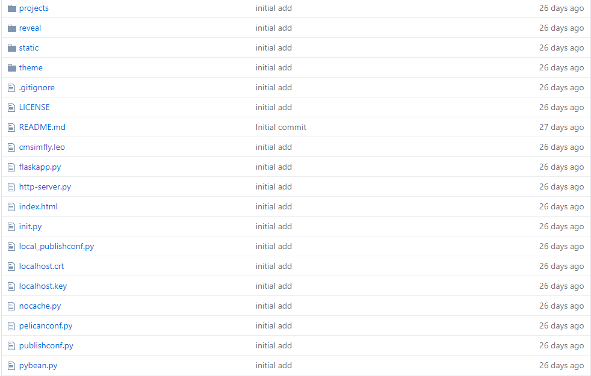
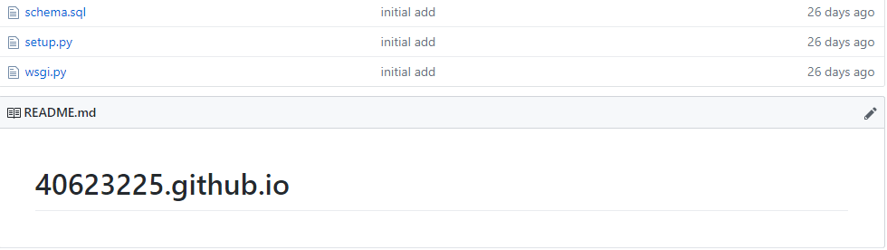